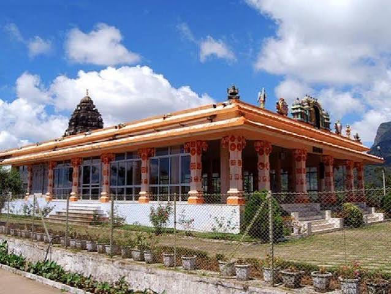

About Balaji Temple

The Balaji Temple is a peaceful place of worship maintained near a plantation area. Its calm atmosphere and surrounding greenery attract both devotees and travellers.
A peaceful place of worship amid green plantations

The Balaji Temple is a peaceful place of worship maintained near a plantation area. Its calm atmosphere and surrounding greenery attract both devotees and travellers.